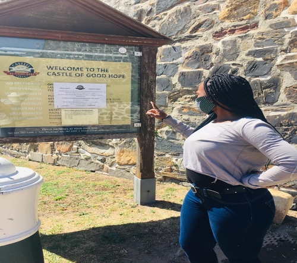

AMANDA
MAARMAN

Which City

Paris
I would like to visit Paris one day to see Louvre is the world's biggest art museum and the Eiffel Tower which is not the most visited monument in Paris.
Aforeign Language
| English Phrase | Foreign Language |
|---|---|
| Hello | Bonjour |
| Agile web developer | développeur web agile |
| Breakfast | Petit-déjeuner |
| Laptop | portable |
| Internet | l'Internet |
Historic places in Cape Town
Castle Of Good Hope
- It is the oldest colonial building in South Africa.
- In 1936 was declared a national monument.
- The first stone was laid on 2 January 1666.

District Six Museum
- It is a place of solace and for some, a place of healing.
- It is made up of 5 interconnected buildings
- It was named in 1867 as the Sixth Municipal District of Cape Town
City Hall
- It is the first place Nelson Mandela spoke from after his release.
- It is made of the honey coloured stone.
- The beautiful old building still has many stories to tell.